Interior and furniture designer, based in Antwerp.
Jeroen Thys van den Audenaerde
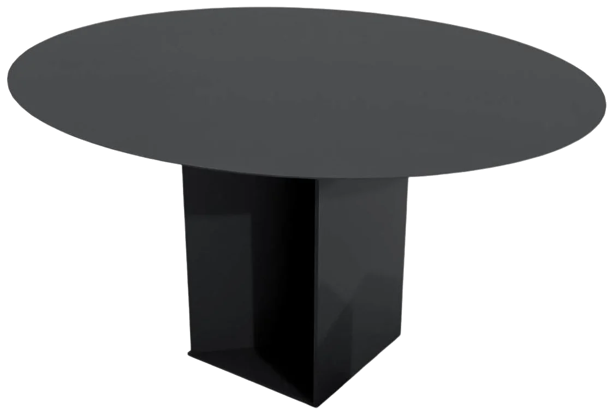
Mostly black.
Sometimes International Klein Blue.
01 — Selected work
Furniture · point at a pieceArt Deco chair, IKB edition
03_ Round dining table — IKB blue glass, blue-stained ash
02 — In situ
Stone yard · workshop · roomsFrom the stone yard to the room.
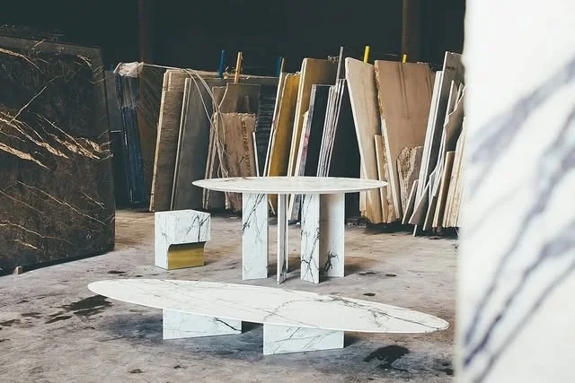
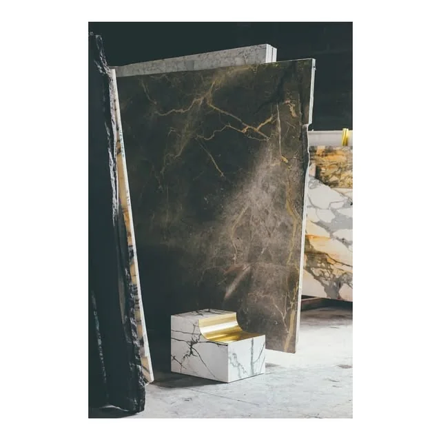
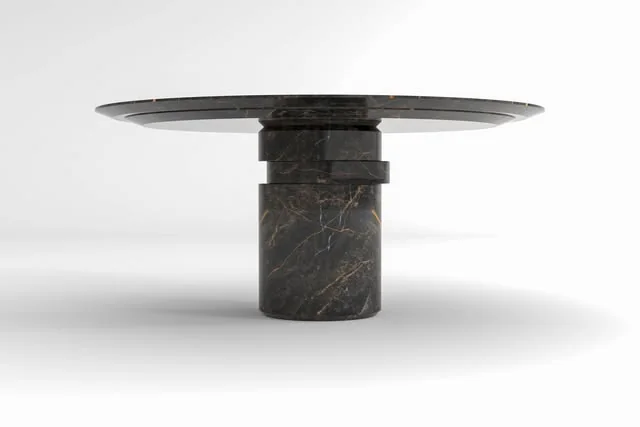
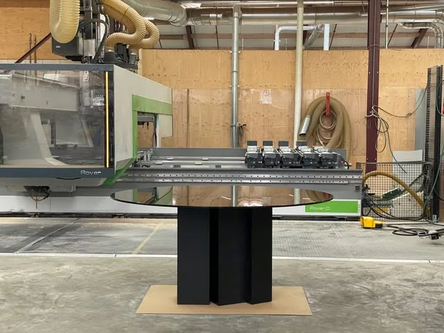
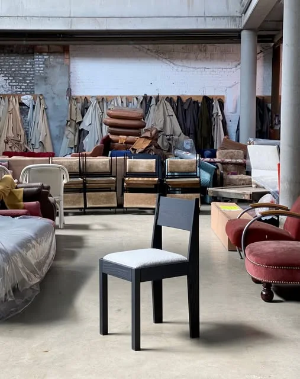
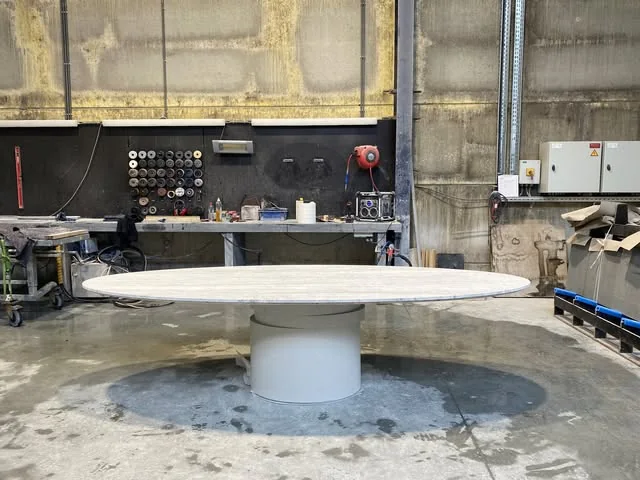
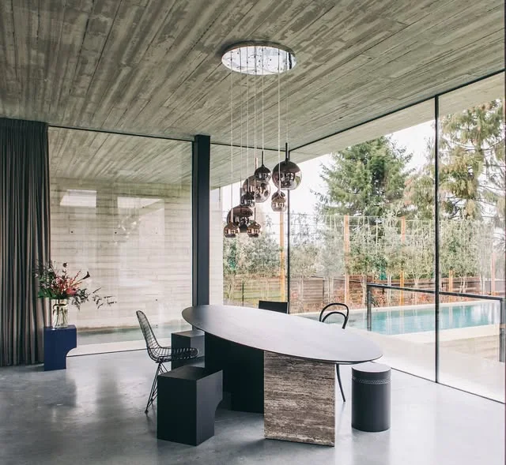
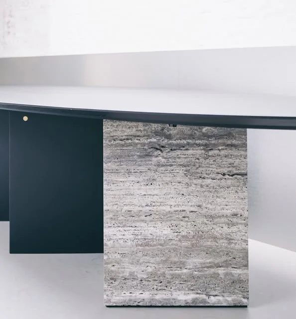
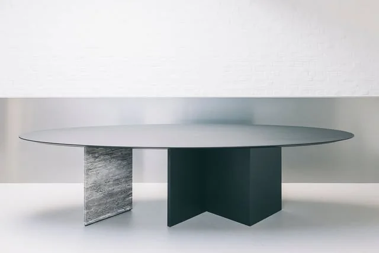
03 — About
Rooted in
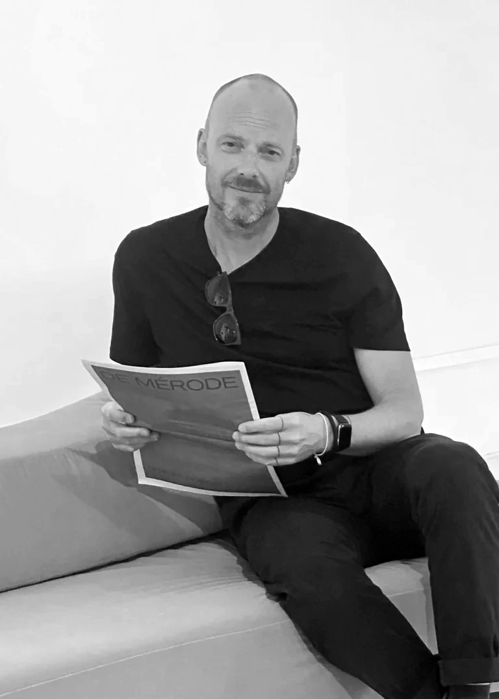
woodworking, reduced to the essential.Profile
Jeroen Thys van den Audenaerde is a Belgian interior and furniture designer based in Antwerp. His work spans interiors, furniture, exhibitions and graphic design.
Wood comes first: its grain and character set the form. What follows is architectural — pure lines, balanced proportions, details that only show up close.
Now
Interior designer at Cockaert Home of Design, Meise.
Shown at
Galerie Philia — Ellipse low table, marble and brass.
- 01Interiors
- 02Furniture
- 03Exhibitions
- 04Graphic design
04 — Contact
For interiors, furniture and design projects.